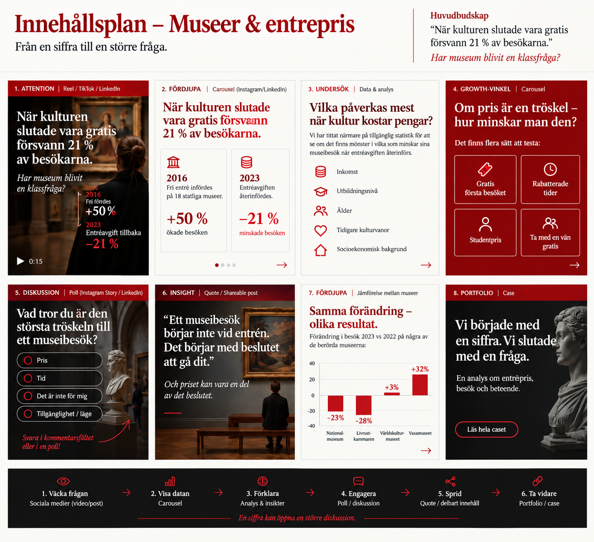

2016 slopade regeringen entréavgiften på 18 statliga museer. Vid årsskiftet 2022–2023 återinförde en ny regering avgiften. Museibesöken följde med i båda riktningarna.
"Ett museibesök börjar inte vid entrén. Det börjar med beslutet att gå dit." — Och priset kan vara en del av det beslutet.
Siffrorna visar en tydlig korrelation mellan entrépris och besöksantal — inte nödvändigtvis vilken regering som styr. Frågan är om museum har blivit en klassfråga, eller om andra faktorer väger tyngre.
Innehållsplan — från en siffra till en större frågaHar museum blivit en klassfråga? Men vilka var det som slutade komma?
Fri entré infördes på 18 statliga museer 2016 (+50% besök). Avgiften återinfördes 2023 (−21%).
Mönster i vilka som minskar sitt museibesök: inkomst, utbildningsnivå, ålder, tidigare kulturvanor, socioekonomisk bakgrund.
Gratis första besöket · Rabatterade tider · Studentpris · Ta med en vän gratis.
Pris · Tid · "Det är inte för mig" · Tillgänglighet/läge.
Det börjar med beslutet att gå dit — och priset kan vara en del av det beslutet.
Nationalmuseum −23% · Livrustkammaren −28% · Världskulturmuseet +3% · Vasamuseet +32%.
En analys om entrépris, besök och beteende.
En siffra kan öppna en större diskussion.
Referens — exempel på slutformatKultur är en fråga om pris. Statistiken visar en tydlig korrelation mellan entrépris och besöksantal — men frågan är vad den betyder för framtidens kulturinstitutioner.
Samma siffror, satta i ett samtal: pris kan vara en tröskel, men det är inte den enda faktorn som avgör om vi går på museum.
Källor: Myndigheten för kulturanalys, "Fri entré till museer" (Rapport 2023:1) och "Ett år utan fri entré" (Faktablad 2024:1); Sveriges Museer, besöksstatistik 2023. Reformmuseer = statliga museer som ingick i 2016 års fri entré-reform. Jämförelsegruppen för 2016 är ett genomsnitt 2013–2019 (exakt siffra för enbart 2016 finns ej); jämförelsegruppen för 2023 avser samma år.
